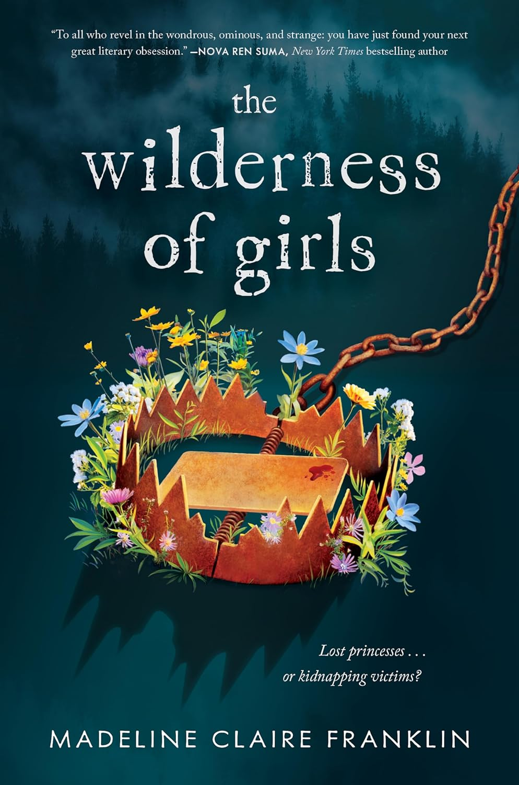

Here you'll find reviews of the latest books, author interviews, and much more!
The Wilderness of Girls |
Summary :-The Wilderness of Girls" is quite the wild ride. It's about Eden who after having been taken to live with her uncle takes on the name Rhi(annon), finds a bunch of girls in the forest when she's helping her uncle out. The girls, four of them, seem to have lived in a castle in a forest all their lives, protected by a man they call Mother. Rhi's own traumatic past and her very nature make the girls trust her and think that she's the promised fifth princess of their realm to which they must return. But as fantastical as this sounds, not everything adds up, the girls of various ages and ethnicities find that they cannot cope with the modern world. Their strong kinship starts to crumble. One of them finds out that she has a twin sister and that she had been stolen as an infant. The sisters begin to drift apart. Rhi too finds that she cannot run from her past forever and fleeing to a magical kingdom might not solve her problems after all. Author: Madeline Claire Franklin Published On : June 11, 2024 Review: This book. It's poetry. It's a knife. It destroyed me. I have not read anything this beautiful, devastating, and original in a very long time. This book goes straight past the skin and into the raw beating heart of what it means to be a person; a girl; someone who doesn't belong and yet hungers for connection; someone who has been hurt and who is trying to figure out how to unwrap their identity from the pain. |
Anzu and the Realm of Darkness |
Summary :- Anzu and the Realm of Darkness' is a children's Japanese folklore-inspired, epic fantasy graphic novel (that counts as an isekai), about self-confidence, reaching your highest self-esteem and potential, and believing in and being yourself. It also touches on grief, friendship, and belonging. It is a very emotional, inspiring, grand story. Anzu herself - such a lovely name, she doesn't need to change it to "Anne" to suit the preferences of racist, stupid, ignorant westerners - seems like your typical, moody, new-kid-in-town, out-of-place hero in any coming-of-age story, but she grew on me (and really, the poor confused child - suddenly in a new, completely strange world after having moved away in her own world - has every right to be "whiny"). Her newfound courage, and persistence and determination to never give up doing the right thing won me over. My favourite character is the Gatekeeper of the realm of Yomi, who is an anthropomorphic black dog, and is like Anzu in a lot of ways; he is scared and self-doubting, with a melting heart of gold. I want to hug him, he is precious. Author: Mai K. Nguyen /p> Published On : May 7, 2024 Review:I really enjoyed this. Anzu is just overwhelmed with life and her trip to the underworld helps her find her voice and true self again. There is a lot about believing in yourself and the importance of names. And taking care of others. The author and illustrator explain the basis for the mythology used in the story so be sure to read the notes at the end - which also includes an explanation for some of the characters you meet along the way. |
Under Jackie’s Shadow |
Summary :-"Under Jackie’s Shadow" is a compelling biography by Ken Burns that explores the life and legacy of Rachel Robinson, the wife of baseball legend Jackie Robinson. This book delves into the remarkable journey of Rachel, who not only supported her husband's groundbreaking career but also carved out her own significant legacy. Rachel Robinson's story is one of resilience, grace, and determination. Born in 1922, Rachel grew up during a time when racial and gender barriers were pervasive. Despite these challenges, she excelled academically, earning a nursing degree from UCLA. It was at UCLA where she met Jackie Robinson, and the two quickly formed a bond that would become a cornerstone of both their lives. The book details Rachel’s vital role in Jackie’s career, particularly during his groundbreaking entry into Major League Baseball with the Brooklyn Dodgers in 1947. As the first African American to play in the majors in the modern era, Jackie faced immense racial hostility. Rachel stood by his side, offering unwavering support and strength. Her presence and counsel were instrumental in helping Jackie endure the relentless pressures and racism he faced on and off the field. Beyond her role as Jackie's wife, Rachel Robinson emerged as a formidable force in her own right. After Jackie’s retirement from baseball, she pursued a career in nursing and academia, earning a master’s degree in psychiatric nursing from NYU. She became an assistant professor at Yale School of Nursing and worked as a researcher and clinician. Rachel’s most enduring legacy is her work with the Jackie Robinson Foundation, which she founded in 1973 after Jackie's death. The foundation provides scholarships and mentoring to minority students, continuing the Robinsons' commitment to equality and education. Under her leadership, the foundation has become one of the most respected and effective scholarship organizations in the United States, empowering countless young people to achieve their educational and professional goals. "Under Jackie’s Shadow" also highlights Rachel Robinson’s advocacy and activism. She has been a prominent voice in civil rights, education, and healthcare reform. Her dedication to these causes has earned her numerous accolades and honors, cementing her status as a significant figure in American history. Ken Burns’ meticulous research and storytelling prowess bring Rachel Robinson’s inspiring story to life. Through interviews, archival material, and personal anecdotes, Burns paints a vivid portrait of a woman who, while often overshadowed by her famous husband, has made indelible contributions to society. In summary, "Under Jackie’s Shadow" is a powerful tribute to Rachel Robinson’s life and legacy. It is a story of love, partnership, and perseverance, highlighting the profound impact one woman can have on her family, community, and country. This biography is an essential read for anyone interested in the untold stories behind iconic historical figures and the enduring fight for social justice. Author: Ken Burns Published On : January 2022 Review:"Under Jackie’s Shadow" is an engaging and heartfelt memoir by Dave Kindred, offering a poignant exploration of the profound impact small-town football can have on a community and an individual's life. As a seasoned sportswriter, Kindred brings his sharp observational skills and deep empathy to this touching narrative, creating a book that resonates on multiple levels. The memoir begins with Kindred's reflections on his distinguished career covering major sports events and personalities. Despite his professional achievements, he felt a growing disconnect from the stories that initially fueled his passion for writing. This sense of dislocation is the catalyst for his return to his hometown of Atlanta, Illinois, where he reconnects with the local high school football team. |